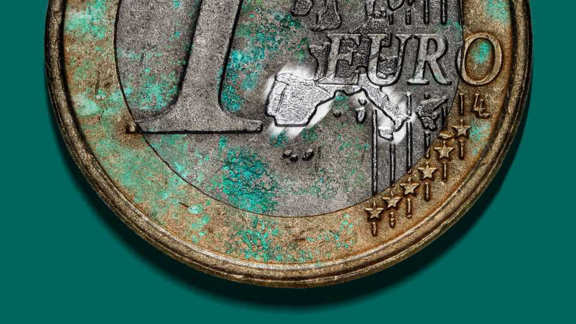
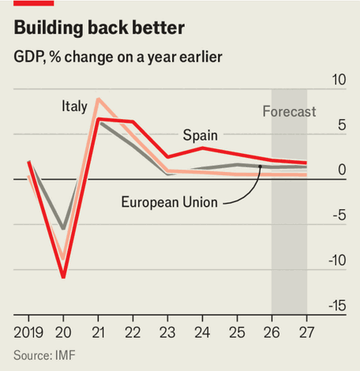

Why the EU’s big covid-recovery fund lost steam
Spain used it better than Italy, but it was not a game-changer

Aug 6th 2026
NOT SINCE the great flood of 1966 has Florence known such disruption. A tramway extension has turned the road fringing the city centre into a construction site. Costing €500m ($576m), it is the city’s biggest project financed by NextGenerationEU, the European Union’s post-covid recovery programme. The scheme is paying for 55 other projects in the Tuscan capital, from crèches to cycle paths. Sara Funaro, the mayor, calls it “a momentous juncture in the history of Florence”.
Across the Mediterranean, Madrid’s wholesale market is abuzz at 5am. It includes one of the world’s biggest fish markets. With a grant of €400,000 in NextGenerationEU funds, the fishmongers’ association has set up a digital payment-and-order system, replacing handwritten orders and long queues at the bank. “It’s saved us a huge amount of time,” says Christian Cobo, as he prepares to sell tuna from huge carcasses.
At NextGenerationEU’s heart is its Recovery and Resilience Facility (RRF), created during the pandemic in 2020, which has approved €577bn in grants and loans. The EU had never spent so much, so fast. Most important, it was funded by joint bonds; advocates of a stronger EU termed it a “Hamiltonian moment”, citing the decision by America’s first treasury secretary to empower the federal government by assuming the states’ debts. It aimed to speed recovery from the pandemic slump, especially in the poorer south, and to make the continent greener and more digital. Disbursements were supposed to be linked to reforms to make economies more efficient. The last payments are due by the end of 2026. Has it worked?
The answer seems to be: sort of. The biggest recipients were Italy (€194bn) and Spain (€103bn), which together account for 52% of the funds. At first glance Spain has done a lot better than Italy (see chart). When the RRF started, Italy’s government reckoned its rate of economic growth would soar from its previous annual average of around 1% to 3.6% this year. In the event, annual GDP growth has been below 1% since 2023. By contrast, Spain has achieved robust growth of at least 2.5% in each year since 2021.

Some of this divergent performance is explained by the way each country used the RRF. Italy risks emerging from the programme “more indebted than before, without having solved its structural weaknesses”, according to a paper by Tito Boeri and Roberto Perotti of Bocconi University in Milan. Many of Italy’s schemes were “trivial or unfeasible”, the economists conclude. Unlike Greece's strategic plan for the funds, Italy’s lacked coherence.
Much of Spain’s economic performance has little to do with the RRF. “The recovery from the pandemic recession was much faster than everyone expected,” says Ignacio de la Torre of Arcano Partners, a financial firm. Spain has approved some useful reforms. It has barred employers from abusing workers by keeping them on temporary contracts indefinitely, and has reduced regulatory obstacles that hinder small businesses and startups. Still, productivity growth remains modest, at 0.7% last year, according to Eurostat.
Massive immigration, which has added labour, accounts for around half of the headline growth and two-thirds of additional jobs, according to the Bank of Spain. (Italy, for its part, has curbed immigration.) An increase in tourism and the export of other services has helped, too. Carlos Cuerpo, the economy minister, thinks the RRF has added three percentage points to GDP. But Funcas, a think-tank in Madrid, reckons that at most only 14% of the total growth of the economy between 2021 and 2025 was due to the RRF money.
Still, the funds may support longer-term growth. “Things are happening, but we can only know the impact in several years’ time,” says Manuel Hidalgo of the University of Seville. Spain has used some of the cash to invest in big capital projects, including schemes for electric vehicles and batteries. In Andalucía, Moeve, a Spanish energy company, is building a €1bn green-hydrogen plant—which will be southern Europe’s largest—with €300m from the RRF. Moeve’s boss, Maarten Wetselaar, says that he expects the electrolysers used to make hydrogen to be 30% cheaper in five years’ time. “The state funds compensate for the first-mover disadvantage,” he says.
Italy may see more benefits over time, too. One of the reforms the European Commission wanted was to speed up the justice system. The slow pace of cases involving debt recovery and dispute settlement discourages foreign companies from investing in Italy. Gian Luigi Gatta of the University of Milan noted in a paper that the average length of court proceedings has been cut by 28% since 2019.
Italy is also on track to increase nursery places—needed to raise women’s workforce participation—by around 150,000 (compared with 378,500 in 2024), though funding them after the RRF expires will be a challenge. The fund has helped build a high-speed railway between Naples and Bari which by 2030 should link the two biggest cities in the poorer south.
The RRF’s flaws are partly built into its structure. During the pandemic, the EU wanted to get money flowing quickly to prevent a lasting slump. One consequence is that some of it went on investments that would have happened anyway. Another is that the programme gave money to national governments instead of pan-European projects or cross-border infrastructure. “In Europe we haven’t yet understood that we need to do things on a more continental scale,” says Mr Hidalgo. The EU’s next generation may regret that. ■